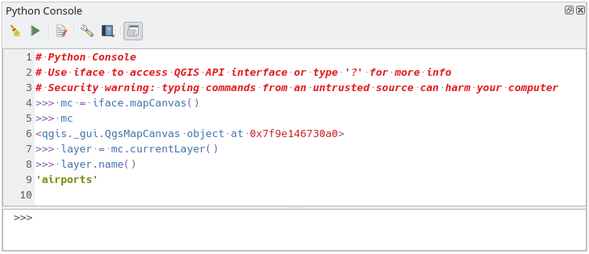
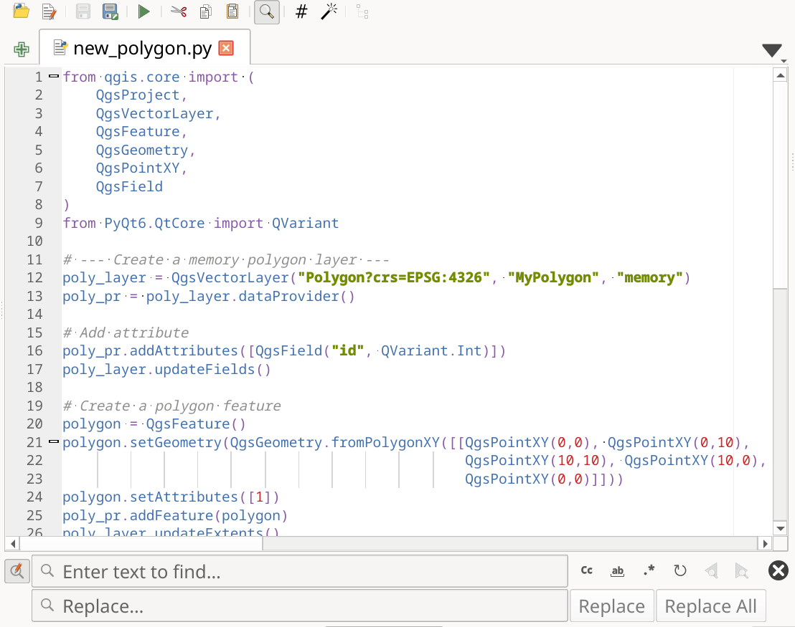
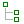

重要
翻訳は あなたが参加できる コミュニティの取り組みです。このページは現在 53.44% 翻訳されています。
25.3. QGIS Python コンソール
この章の後半でご覧になるように、QGISはプラグインアーキテクチャで設計されています。プラグインはPythonで書くことができます。Pythonは地理空間分野では非常に有名なプログラミング言語です。
QGIS には、ユーザがオブジェクト（レイヤ、地物、インターフェイス）を対話的に利用できるように、Python API があります（コードのサンプルは PyQGIS 開発者用クックブック を参照して下さい）。また QGIS にはPythonコンソールもあります。
The QGIS Python Console is an interactive shell for Python command executions.
It also has a Python file editor that allows you to edit and save your Python scripts.
Both console and editor are based on PyQScintilla2 package.
To open the console go to (Ctrl+Alt+P) or
click on the  Python Console icon in the Plugins toolbar.
Python Console icon in the Plugins toolbar.
25.3.1. 対話型コンソール
コンソールはPythonインタープリターであり、Pythonコマンドを実行することができます。QGIS（analysis、core、gui、server、processing、3D）およびQt（QtCore、QtGui、QtNetwork、QtWidgets、QtXml）のモジュール、ならびにPythonのmath、os、re、sysモジュールはすでにインポートされており、直接使用することができます。
対話型コンソールは、ツールバー、入力エリア、および出力エリアから構成されています。

図 25.17 Python コンソール
25.3.1.1. ツールバー
ツールバーからは以下のツールを利用できます:
入力エリアで使用できる
 コマンドの実行: Enter キーを押すのと同じです;
コマンドの実行: Enter キーを押すのと同じです;エディタの表示 ： コードエディタ の表示・非表示を切り替えます。
 オプション... ： コンソールのプロパティ を設定するためのダイアログを開きます;
オプション... ： コンソールのプロパティ を設定するためのダイアログを開きます; ヘルプ... 様々なドキュメントにアクセスするためのメニューを提供します:
ヘルプ... 様々なドキュメントにアクセスするためのメニューを提供します: コードエディタをドッキング は、QGISインターフェイスにパネルをドッキングしたり解除したりします
コードエディタをドッキング は、QGISインターフェイスにパネルをドッキングしたり解除したりします
25.3.1.2. 入力エリア
コンソール入力エリアの主な機能は以下のとおりです:
コード補完、シンタックスハイライト、加えて以下のAPIには入力候補をポップアップで表示します:
Python
PyQGIS
PyQt5
QScintilla2
osgeo-gdal-ogr
osgeo-geos
Ctrlキー+Altキー+Space ： Python設定 で有効にしている場合は自動補完リストを表示する；
キーボード入力し Enter または コマンドを実行 を押して入力エリアからコードスニペットを実行します;
コンテキストメニューから 選択部分を入力 を使用するか、 Ctrlキー+ E を押して、出力エリアからコードスニペットを実行します;
Up と Down の矢印キーを使用して、入力エリアからコマンド履歴を閲覧して、必要なコマンドを実行します。
Ctrlキー+シフト+ Space はコマンド履歴を表示するために：行をダブルクリックしてコマンドを実行します。 コマンド履歴 ダイアログはまた、入力エリアのコンテキストメニューからアクセスできます。
コマンド履歴を保存して消去します。履歴はアクティブな user profile フォルダの下の
console_history.txtファイルに保存されます；以下の特殊コマンドを入力します:
?はPythonコンソールのヘルプを表示します_apiは QGIS C++ API ドキュメントを開き、_api(object)は特定のオブジェクトのドキュメント（QGIS C++ API または Qt API ドキュメント）を開きます_pyqgisは QGIS Python API ドキュメントを開き、_pyqgis(object)は特定のオブジェクトのドキュメント（QGIS Python API または Qt API ドキュメント）を開きます_cookbookは PyQGIS Cookbook を開きます。!にコマンドを続けるとPythonコンソールからシェルコマンドを実行します。コンソールはサブプロセスを開始し、その出力をPythonコンソール出力に転送します。サブプロセスが実行されている間、Pythonコンソール入力はSTDINモードに切り替わり、入力された文字を子プロセスに転送します。これにより、子プログラムが確認を要求する場合に、それを送ることができます。コンソールがSTDINモードの場合、Ctrlキー+C を押すとサブプロセスが終了します。また、構文var = !cmdにより、コマンドの結果を変数に反映させることもできます>>> !echo QGIS Rocks! QGIS Rocks >>> !gdalinfo --version GDAL 3.10.3, released 2025/04/01 >>> !pip install black # Install black python formatter using pip (if available) >>> sql_formats = !ogrinfo --formats | grep SQL >>> sql_formats ['SQLite -vector- (rw+v): SQLite / Spatialite', ' MSSQLSpatial -vector- (rw+): Microsoft SQL Server Spatial Database', ' PostgreSQL -vector- (rw+): PostgreSQL/PostGIS', ' MySQL -vector- (rw+): MySQL', ' PGDUMP -vector- (w+v): PostgreSQL SQL dump']
Tip
出力パネルから実行済コマンドを再利用します
いくつかのテキストを選択し、Ctrlキー+ E を押すと出力パネルからコードスニペットを実行できます。選択したテキストにインタープリタのプロンプト( >>>, ... )が含まれていても問題ありません。
25.3.2. コードエディタ
Use the Show Editor button in the Interactive Console to enable the editor widget. It allows editing and saving Python scripts and offers advanced functionalities to manage your code. Depending on the enabled settings, it provides various capabilities for easier code writing, such as code completion, highlighting syntax and calltips for supported APIs. Automatic indentation, parenthesis insertion, code commenting and syntax checking are also available.

図 25.18 Pythonコンソールエディタ
The code editor area allows to simultaneously work on different scripts, each in a specific tab.
Press  New editor to add a new tab.
You can run partially or totally a script from the Code Editor
and output the result in the Interactive Console output area.
New editor to add a new tab.
You can run partially or totally a script from the Code Editor
and output the result in the Interactive Console output area.
Tip
Press Ctrl+Space to view the auto-completion list.
At the top of the dialog, a toolbar provides access to a few commands. Right-clicking the editor area provides some more options. All available tools are described in the following table.
Tool name |
Function |
場所 |
|---|---|---|
Loads a Python file in the code editor dialog, as a new tab |
ツールバー |
|
Opens a saved Python script in the default external program set for Python file editing |
||
|
Saves the current script |
|
|
Saves the current script as a new file |
|
|
Executes the whole script in the Interactive console
(this creates a byte-compiled file with the extension |
Toolbar & Contextual menu |
|
Attempts to display help on the selected string (class, method, object,...) in its corresponding API documentation |
コンテキストメニュー |
Executes in the Interactive console the lines selected in the script |
Toolbar & Contextual menu |
|
|
Cuts selected text to the clipboard |
|
|
Copies selected text to the clipboard |
|
|
Pastes a cut or copied text |
|
Allows to search and replace a text in the script.
|
||
Comments out or uncomment selected lines, by adding or removing |
||
Allows to manually apply various formatting rules (sort imports, indentation, line length,…) to the code, following user-defined settings. This may require installation of additional Python modules. |
||
 |
Shows and hides a dedicated browser with a tree structure for classes and functions available in the script. Click an item for a quick access to its definition. The tool requires an activation from the Python settings - Run and Debug. |
|
Hide editor |
Hides the Python code editor block. To make it visible again, press Show editor button from the interactive console toolbar. |
コンテキストメニュー |
Browses the code and reports syntax errors, such as missing parenthesis, colons, wrong indentation,… |
||
|
Undoes the latest action |
|
|
Reverts undone actions to a more recent |
|
Select all (Ctrl+A) |
Selects the whole script |
|
Shares the script as a Secret Gist or Public Gist on GitHub, provided a GitHub access token. |
||
|
Opens the Python設定 dialog. |


{kind=link}
{kind=link}
{kind=link}
{kind=link}
{kind=link}
{kind=link}
{kind=link}
{kind=link}
{kind=link}
{kind=link}
{kind=link}
{kind=link}